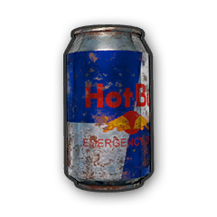

The Med Kit is an important item to have in your survival stock. With Med Kits, you can dramatically extend your survivability and your ability to withstand more firefights. That being said, don't depend on them, as you're essentially locked in place for a time as the medkit is applied, which can make you a sitting duck. Unlike the First Aid Kit the Med Kit will immediately set the player's health to 100%.
First Aid Kits heal a character's health to 75 instantly. Performing certain actions while casting this item will cancel it. This item cannot be used when player's health is over 75.
After certain amount of time, Bandage heals character's health up to 10 overtime. performing certain actions while casting this item can cancel the effect. Cannot heal character's health over 75.
The Adrenaline Syringe is a medical tool that allows for additional time between the incident of wounding and the blackout or subsequent loss of control due to loss of blood. In the real world it's mostly used for other purposes, but in-game, it is used as a health item of sorts to allow the player to keep going despite their injuries.
Painkillers increase a character's boost by 60 instantly which can make the player's health slowly increase above the 75. Performing certain actions while casting this item will cancel it.

Energy Drinks increase a character's boost by 40 instantly which can make the player's health slowly increase above the 75. Performing certain actions while casting this item will cancel it.